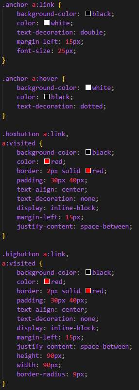

The anchor link is a means to going between pages on a website with links in the form of '< a href>' (hypertext
reference) and '< /a>'.
Some examples
of anchor links include the Content Area links you use to navigate my page and the button you pressed to
get here!
These links can be customised and given additional functionality such as 'target="_blank"',
this opens the link on a new page.
Here are some more examples on this page:
The colour of the text changes once you've visited the link, but we can stop this with ' a:visited ' in the
style!
You can also make custom buttons by using border tags and such.
You can also make unnecessarily large buttons.
